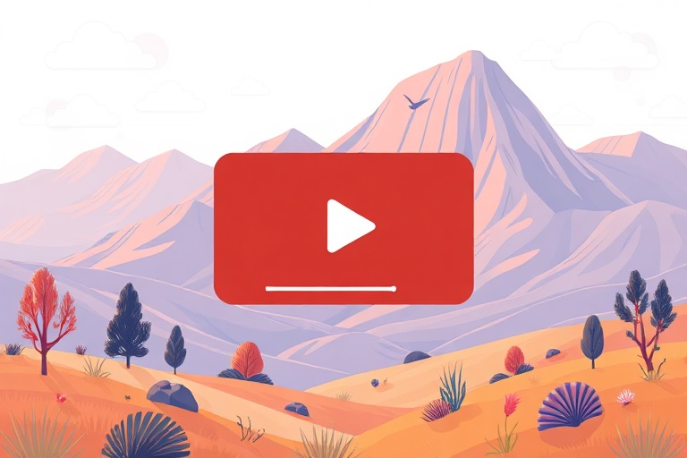

A Beginner's Guide to Creating Your First AI-Generated Videos
Category: video | Language: en
Artificial intelligence has fundamentally changed how videos are produced, allowing anyone to generate video footage without owning a professional camera, lighting equipment, or animation software. Whether you are a student preparing a visual presentation, a small business owner creating social media clips, or an aspiring digital creator, AI video generators convert simple written text or still pictures into fluid motion. This guide breaks down the essential concepts, workflow steps, and realistic limitations so you can start generating your own video clips safely and effectively.
Before jumping into generation software, beginners need to understand the two primary categories of AI video tools. The first category is text-to-video and image-to-video generators, such as Runway, Pika, or Luma Dream Machine. These tools use deep-learning models trained on millions of video clips to interpret descriptive text prompts or animate still photographs into dynamic cinematic scenes. The second category consists of synthetic talking-avatar platforms, such as HeyGen or Synthesia, which animate photorealistic digital human avatars that speak scripts using synthetic voices. Choosing between these depends entirely on whether your project needs cinematic b-roll visuals or a direct-to-camera presenter.
Creating a successful AI video begins with prompt engineering, which is simply the art of giving clear, descriptive instructions to the model. AI models struggle with vague instructions like 'make a cool futuristic car.' Instead, effective prompts specify the subject, action, environment, lighting, and camera movement. A stronger prompt looks like: 'A sleek electric sports car driving down a wet mountain highway at dusk, cinematic low-angle tracking shot, soft reflections on asphalt, photorealistic 4K style.' Mentioning camera direction—such as panning, zooming, or aerial drone views—gives the algorithm clear parameters on how to move the virtual camera through the 3D scene.
To understand the practical workflow, imagine you want to create an eight-second promotional clip of a coffee shop. You start by opening a web-based text-to-video platform in your browser. Next, you set your project dimensions: select a 16:9 widescreen aspect ratio for YouTube or landscape viewing, or 9:16 vertical orientation for Instagram Reels and TikTok. You enter your prompt describing barista hands pouring steamed milk into an espresso mug with soft morning sunlight streaming through a window. The system processes the request on cloud servers and outputs a four-second clip within a minute or two. Most platforms then offer an 'extend' feature, allowing you to generate an additional four seconds that seamlessly continue the movement.
Beginners should realize that raw AI video tools rarely produce a complete, polished final video on their own. Most models generate standalone clips lasting between three and ten seconds. The true production process involves assembling these separate clips inside a standard, easy-to-use video editor such as CapCut, Apple iMovie, or Microsoft Clipchamp. In the editor, you arrange your clips in sequence, trim awkward frames where the AI generated distorted motion, add background music from a royalty-free library, and overlay title cards or subtitles to deliver your message clearly.
While AI video creation is accessible, it has clear technical boundaries and financial models that beginners must navigate. The processing happens in the cloud, meaning you do not need an expensive computer with a powerful graphics card, but you do require a stable internet connection. Most services operate on a freemium model: they grant a limited allotment of monthly credits to test the software, but free exports often carry platform watermarks and standard-definition resolution. To export high-definition 1080p video, remove watermarks, or generate longer scenes, you typically need a monthly paid subscription that provides a recurring credit allowance.
Understanding current technical limitations prevents unnecessary frustration. AI video generators frequently struggle with fine physical details, such as human hands, rapid athletic movements, and consistent text rendering. Characters may occasionally morph or warp unnaturally between frames, and maintaining identical facial features across multiple distinct shots remains challenging. When a generated clip shows physical distortions—such as extra fingers or an object unnaturally melting into the background—it is usually better to adjust your prompt slightly and re-roll the generation rather than attempting to fix the glitch in an editing program.
Safety, privacy, and copyright ethics require careful attention when using generative media. Never upload personal photos or videos of real individuals without their explicit, written consent, particularly when generating talking avatars or synthetic likenesses. Additionally, inspect the platform's commercial terms of service: some free tiers explicitly prohibit using generated clips for commercial advertising or monetized channels unless you upgrade to a commercial-use plan. Be cautious of unfamiliar third-party websites or mobile apps demanding expensive annual subscriptions; stick to reputable, established generative platforms with transparent pricing and clear content moderation policies.
To take your first practical step today, choose an established tool offering a free trial tier, write a straightforward two-sentence prompt describing a simple outdoor scene, and generate your first four-second clip. Do not worry about perfection on your initial attempt. Focus on observing how subtle changes in your wording alter camera motion and lighting, and practice cutting your generated clips together into a short story. With iterative practice and careful editing, you can produce compelling visual media that complements your creative projects.